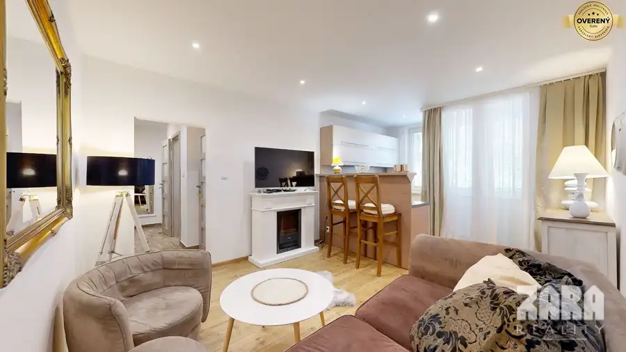
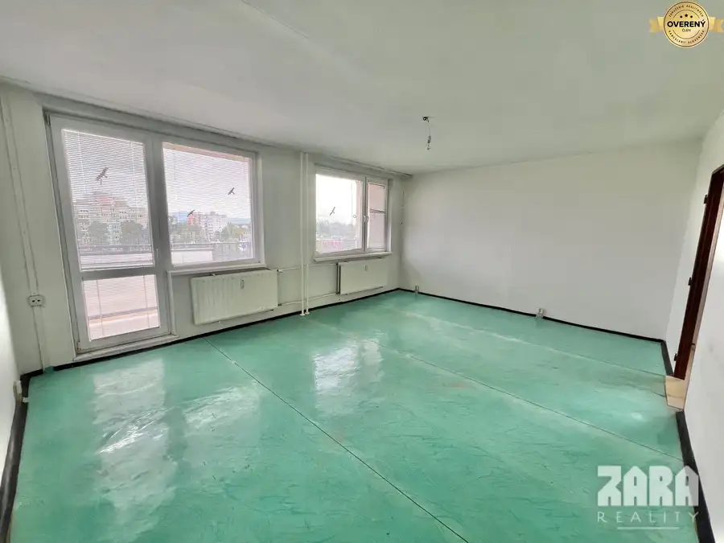
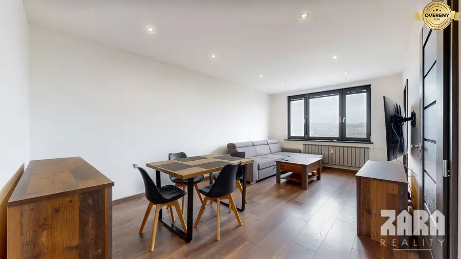

SOFIJSKÁ - Pekný 2 izbový byt, 52m² + LOGGIA, 7/8 posch.
mestská časť Sídlisko Ťahanovce, Košice
- Dispozícia2-izbový
- Plocha52 m²
- Poschodie7. z 8
- Stavčiastočne prerobený
- Vlastníctvoosobné
- Energetická triedaC
O nehnuteľnosti
NOVINKA: veľmi pekný, priestranný 2-izbový byt po čiastočnej rekonštrukcii.
2 izbový byt ul. SOFIJSKÁ, sídlisko Ťahanovce
✨PLNOHODNOTNÝ DVOJIZBOVÝ BYT
✨DOBRÁ DISPOZÍCIA BYTU
✨NEPRIECHODNÉ IZBY
□ podlahová plocha 52 m² + LOGGIA
□ zasklenná loggia
□ kúpou voľný
□ bez tiarch
□ nachádza sa na 7/8 posch.
□ osobné vlastníctvo
□ priestor pred bytom, ktorý je možné využívať so susedným bytom
□ pivnica
□ energetický certifikát C
✅REKONŠTRUKCIA:
Kvalitné plávajúce laminátové podlahy.
Znížené sadrokartónové podhľady s bodovým LED podsvietením. Plastové okná.
Možnosť ďalšej rekonštrukcie podľa vaších predstáv.
✅DISPOZÍCA:
PREDSIEŇ: dostatok priestoru pre vstavanú skriňu, predsieňový nábytok.
OBÝVACIA IZBA: pekne presvetlená priestranná izba s výstupom na zasklennú loggiu. Menené plastové okná, plávajúca podlaha.
KUCHYŇA: kuchynská linka na mieru robená s množstvom úložného priestoru, funkčné odsávanie, plynový sporák s teplovzdušnou elektrickou rúrou. Priestor pre stolovanie.
SPÁLŇA: Dostatočné miesto pre umiestnenie väčšej postele, vstavanej skrine a nábytku. V izbe sú menené plastové okná a aj podlaha.
MUROVANÉ bytové jadro: kúpelňové jadro je pôvodné, avšak upravené keramickým obkladom a dlažbou na podlahe. Miesto vyhradené pre automatickú práčku.
K dispozícií sprchovací kút, umývadlo so skrinkou, zrkadlo, kúpeľňovou skrinkou, odsávanie, toaleta. Keramický obklad a dlažba farebne zladená s kúpeľňou.
BYTOVÝ DOM: čisté spoločné priestory, Momentálne nie je zateplený.
Energetický certifikát C
***
Lokalita sídliska ŤAHANOVCE: má vynikajúcu občiansku vybavenosť.
V blízkosti bytového domu je základná škola, zastávka autobusu, parkovisko, detské ihriská, les.
V okolí nájdete všetko potrebné: zastávky MHD, veľké obchodné centrá, supermarkety, výborné nákupné možnosti, poliklinika, zdravotné strediská, pošta, kostoly, základné školy, škôlky, materské škôlky.
Multifunkčné ihriská, reštaurácie, pohostinstvá, banky, veterinárne ambulancie, aj uzavreté venčoviská pre vašich psích miláčikov...
V neďalekom lesíku si môžete užiť rodinnú grilovačku s priateľmi, zájsť na huby, alebo len tak na prechádzku po čerstvom vzduchu.
***
ZARA REALITY: spolupracuje s finančnými špecialistami. Kvalifikovaní odborníci, ktorí majú potrebné znalosti. Spolu Vám šetríme Váš čas, aj peniaze...
ZARA REALITY: Keď sa sny stávajú realitami...
Kúpa bytu je dôležitým krokom v živote každého človeka. Nenechajte nič na náhodu a v prípade záujmu o obhliadku, alebo podrobnejších informácií, kontaktujte
realitného makléra
Parametre
| Úžitková plocha | 52 m² |
|---|---|
| Poschodie | 7/vyššie poschodie |
| Počet poschodí | 8 |
| Počet izieb | 2 |
| Vlastníctvo | osobné |
| Stav | čiastočne prerobený |
| Plyn | áno |
| Internet | optika |
| Kúpeľňa | áno |
| Lódžia | áno - 1 |
| Pivnica | áno |
| Výťah | áno |
| Parkovanie | verejné |
| Postavené z | panel |
| Zateplený objekt | nie |
| Energetický certifikát | C |
| Bezbariérový prístup | nie |
| Okná | plastové |
| Dátum zverejnenia | 31. 3. 2026 |
Kde to je
mestská časť Sídlisko Ťahanovce, Košice
Inzerát neuvádza presnú polohu, mapa ukazuje obec.
Otvoriť v mapáchMohlo by Vás zaujímať

Byt10 169 800 €ČIERNOMORSKÁ - ZARIADENÝ 1,5 izb. byt po KOMPL. rekonštrukcii 42 m2 mestská časť Nad jazerom, Košice 2-izbový42 m²3. podlažie Štýlový, kompletne zrekonštruovaný a zariadený byt s premyslene zmenenou dispozíciou. Byt, v ktorom sa 42 m² využilo na maximum. Premyslená…
Byt10 187 000 €Družicova - 3 izbovy byt pražský typ, 69 m2 + loggia. Pôvodný stav. mestská časť Nad jazerom, Košice 3-izbový69 m²5. podlažie ZARA REALITY v zastúpení Zdenka Horváthová ponúka exkluzívne: Hľadáte byt, ktorý si chcete zrekonštruovať od základov podľa vlastných predstáv, bez…
Byt10 286 000 €Benadova - 4-izbový byt po kompletnej rekonštrukcii, 79 m², loggia mestská časť Dargovských hrdinov, Košice 4-izbový79 m²7. podlažie ZARA REALITY ponúka na predaj priestranný 4-izbový byt po kompletnej rekonštrukcii na Benadovej ulici v Košiciach, mestská časť Dargovských hrdinov -…